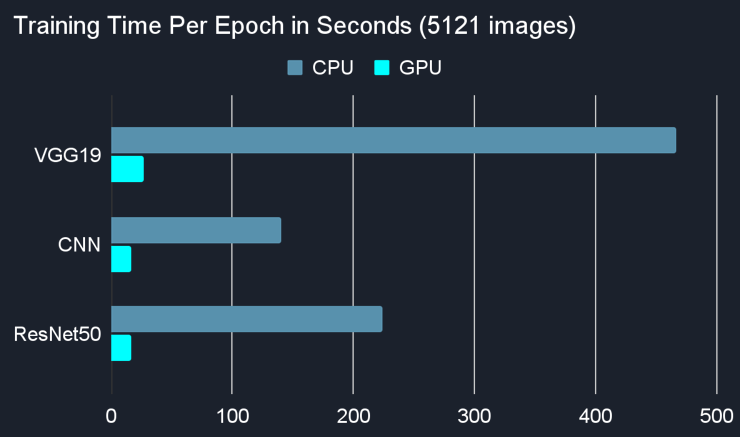

Obtaining the MRI Dataset
Alzheimer's Disease Neuroimaging Initiative (ADNI) provides access to high-quality MRI brain scans for research purposes. These brain scans are stored in a special format called NIfTI (.nii) that encodes 3D MRI data digitally. Click here to view a sample .nii file for yourself.Cleaning Up the Dataset
To convert a .nii file into 2D image data, we used a Python package called NiBabel, and thanks to this, we were able to see images like the ones you see here. But these slices weren't the ones we were looking for; we only wanted to look at a few slices from the middle part of the cerebrum.Automated Dataset Generation
The position of the head in each .nii file is different, so we couldn't just blindly select, say, the 100-102th slices from each .nii file. But we already had a solution on hand: machine learning! So we obtained a fairly large .png dataset from Kaggle and applied transfer learning to the VGG19 model using Tensorflow. And our dataset was ready to go!Neural Network Training
We have tried many different neural network models, including VGG16, VGG19, ResNet50, and our own Convolutional Neural Network (CNN), and we didn't want to pick one and throw away everything else. That's why we decided to make an Ensemble Model using VGG19, CNN, and ResNet50.Getting Help from the GPU
Due to the massive size of these neural network models and the number of images used in training, we needed to find a way to optimize the training process. We came across CUDA Deep Neural Network (cuDNN) which enabled our program to take advantage of the GPU's superior processing power and make the training process 13 times faster!- CPU: Intel i5-10400F CPU @ 2.90GHz (hexa-core)
- GPU: NVIDIA GeForce GTX 1660 SUPER
- RAM: 16 GB

Metrics & Results
Ultimately, we determined that high sensitivity (True Positive / (True Positive + False Negative)) is the most important metric for our purposes, and continued to fine-tune our model to reach 98.2% sensitivity, which means only 1.8% of demented patients would go undiagnosed using our model.| Prediction: ND | Prediction: D | |
| Actual: ND | True Negative | False Positive |
| Actual: D | False Negative | True Positive |
ND: Not Demented, D: Demented